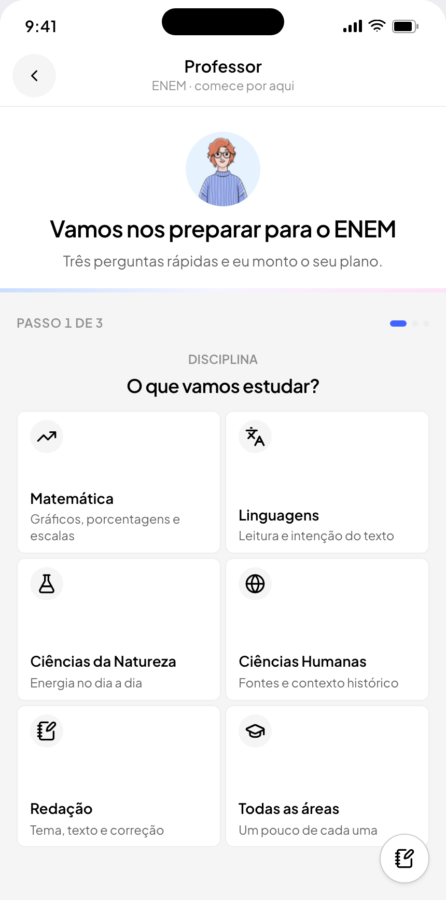
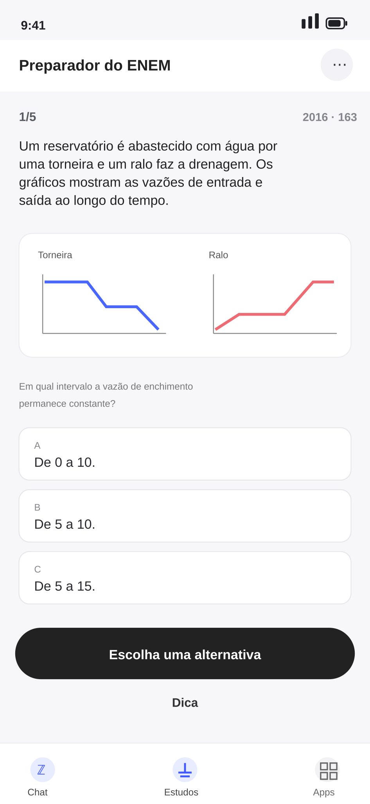
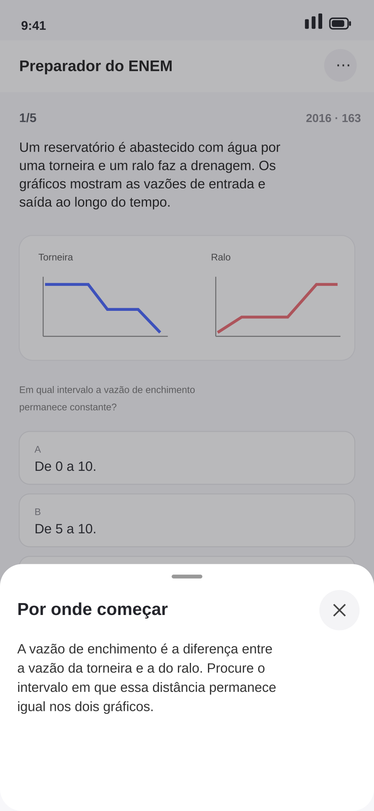
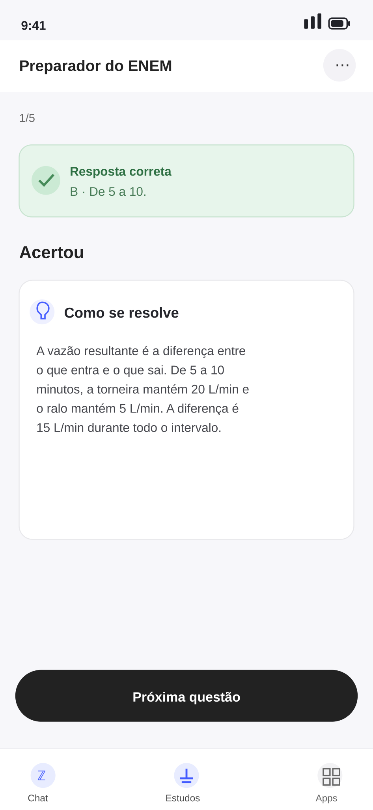
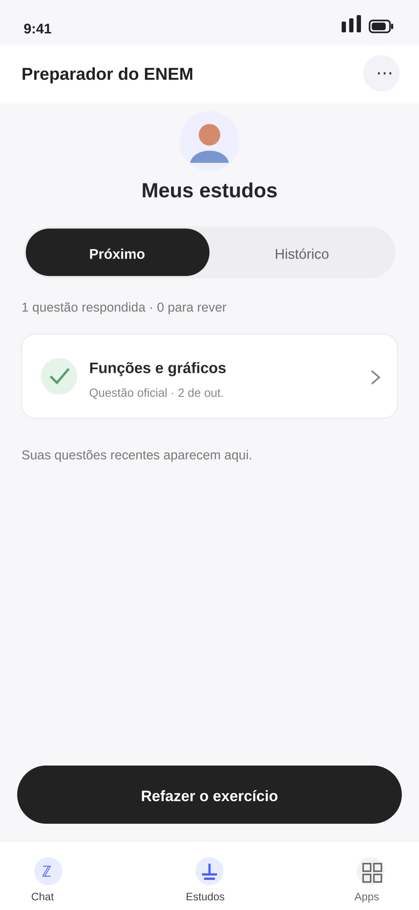

Felipe Amorim
Felipe AmorimMake a study habit out of the moment they already show up.
A study experience designed to turn everyday homework help into a clear path towards Brazil’s ENEM exam.

A question becomes a reason to return.
Practice moves from a real exam question to a contextual hint, a worked explanation and a simple review loop. The additional states are illustrative redraws from the responsive staging experience.




Students came for homework help. Studying had no home.
The product already helped students solve homework, but that moment ended when the answer arrived. The opportunity was to make practice and progress part of the existing habit.
Put the study loop inside the solve.
A short setup leads into focused practice, then returns the student later. Structured content keeps study separate from answer generation; progress gives a reason to come back without making a missed day feel like failure.
Keep the product logic dependable.
Use deterministic topic recognition where a wrong label could teach the wrong lesson. Reserve generative help for explaining a question a student got wrong.